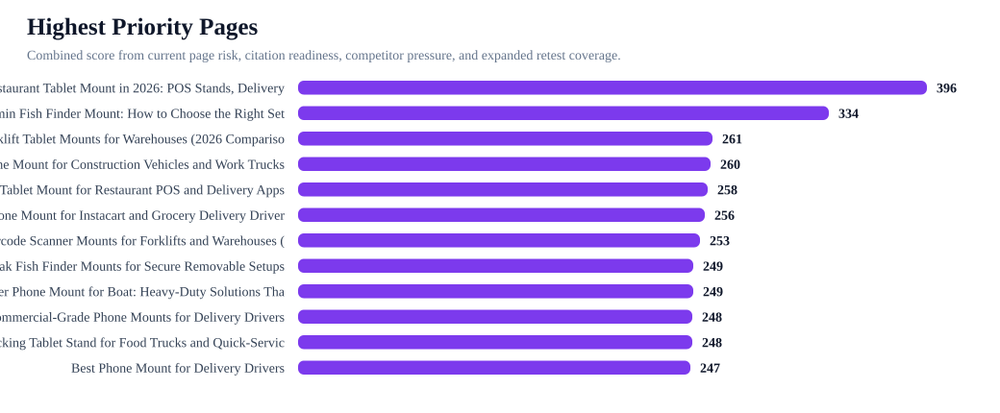
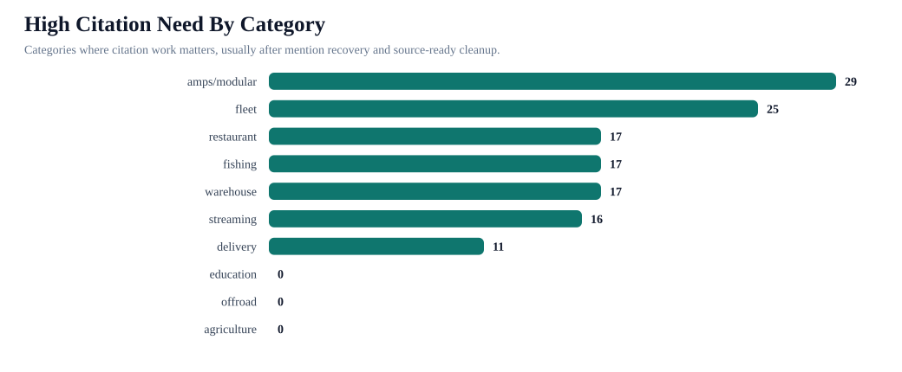
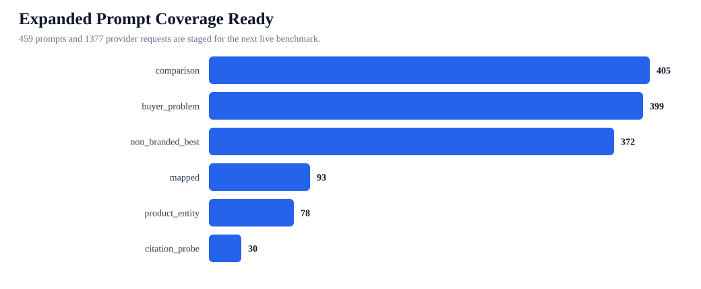

iBOLT Citation vs Mention Control Report
Read: Citation rate should be a KPI, but it is downstream from inclusion. The current citation rate is 0%, while non-branded mention is only 5%. Most high-value pages should be edited and retested before off-site citation outreach.
Mention rate
24%
22/93
Non-branded mention
5%
4/75
Top-3 recommendation
16%
15/93
Citation rate
0%
0/93
High citation need pages
132
but mostly after page fixes
Expanded retest requests
1377
459 prompts
Charts




Highest Priority Pages
| Page | Category | Lane | Need | Score | Competitors | Retest prompts |
|---|---|---|---|---|---|---|
| Best Restaurant Tablet Mount in 2026: POS Stands, Delivery App Stations, and Multi-Tablet Solutions Compared | restaurant | Canonical plus mention recovery first | High | 396 | RAM Mounts; Mount-It; Bouncepad; Arkon; CTA Digital; iOttie; Tackform; ProClip | best tablet mount; best multi tablet mount; best restaurant tablet mount; is iBOLT™ 20mm Metal Ball Suction Cup Base good for restaurant tablet mount in pos stands delivery app stations and multi-tablet solutions; RAM Mounts vs iBOLT for restaurant tablet mount in pos stands delivery app stations and multi-tablet solutions; best restaurant tablet mount in pos stands delivery app stations and multi-tablet solutions; what restaurant tablet and POS mount should I use for restaurant tablet mount in pos stands delivery app stations and multi-tablet solutions; which brands are cited for restaurant tablet and POS mount |
| Best Garmin Fish Finder Mount: How to Choose the Right Setup for Your Boat or Kayak | fishing | Canonical plus mention recovery first | High | 334 | RAM Mounts; Garmin; Lowrance; Humminbird; YakAttack; Scotty; Square | best budget fish finder mount; best fish finder in water; best fish finder; best value fish finder mount; RAM Mounts vs iBOLT for garmin fish finder mount choose the right setup for your boat or kayak; is iBOLT™ 25mm / 1 inch Ball Composite Universal Marine Fish Finder Mounting Plate good for garmin fish finder mount choose the right setup for your boat or kayak; best garmin fish finder mount choose the right setup for your boat or kayak; what fish finder and boat phone mount should I use for garmin fish finder mount choose the right setup for your boat or kayak; which brands are cited for fish finder and boat phone mount |
| Best Forklift Tablet Mounts for Warehouses (2026 Comparison) | warehouse | Canonical plus mention recovery first | High | 261 | RAM Mounts; ProClip; Havis; Zebra; Arkon; CTA Digital; Tackform; Garmin | best tablet mount for warehouse; best forklift tablet mount; RAM Mounts vs iBOLT for forklift tablet mount for warehouses; is iBOLT Dock’n Lock Bizmount™- Forklift Locking Tablet 38mm Mount good for forklift tablet mount for warehouses; best forklift tablet mount for warehouses; what forklift tablet and barcode scanner mount should I use for forklift tablet mount for warehouses; which brands are cited for forklift tablet and barcode scanner mount |
| Best Phone Mount for Construction Vehicles and Work Trucks | fleet | Canonical plus mention recovery first | High | 260 | RAM Mounts; ProClip; Arkon; Tackform; iOttie; Scosche; Garmin | best phone mount for construction vehicles and work trucks; RAM Mounts vs iBOLT for phone mount for construction vehicles and work trucks; is iBOLT™ xProDock™ Bizmount™ Amps good for phone mount for construction vehicles and work trucks; what fleet and ELD vehicle mount should I use for phone mount for construction vehicles and work trucks; which brands are cited for fleet and ELD vehicle mount |
| Best Tablet Mount for Restaurant POS and Delivery Apps | restaurant | Canonical plus mention recovery first | High | 258 | Square; RAM Mounts; Arkon; Mount-It; CTA Digital; Heckler; Garmin | best tablet mount for restaurant POS and delivery apps; RAM Mounts vs iBOLT for tablet mount for restaurant pos and delivery apps; is iBOLT™ LockPro™ Drill Base Locking Tablet Stand- Point of Purchase/POS Mount good for tablet mount for restaurant pos and delivery apps; what restaurant tablet and POS mount should I use for tablet mount for restaurant pos and delivery apps |
| Best Phone Mount for Instacart and Grocery Delivery Drivers | delivery | Canonical plus mention recovery first | High | 256 | RAM Mounts; iOttie; Peak Design; Scosche; Garmin | best phone mount for Instacart and grocery delivery drivers; RAM Mounts vs iBOLT for phone mount for instacart and grocery delivery drivers; is iBOLT Moto-Vise™ IncrediBOLT™ Heavy Duty Phone Clamp / Handlebar / Rail Mount good for phone mount for instacart and grocery delivery drivers; what delivery driver phone mount should I use for phone mount for instacart and grocery delivery drivers; which brands are cited for delivery driver phone mount |
| Best Barcode Scanner Mounts for Forklifts and Warehouses (2026) | warehouse | Canonical plus mention recovery first | High | 253 | RAM Mounts; Arkon; Square; ProClip; Havis; Zebra; Garmin | best barcode scanner mount for forklift; RAM Mounts vs iBOLT for barcode scanner mount for forklifts and warehouses; is iBOLT XL Forklift Barcode Scanner Holder 38mm Mount good for barcode scanner mount for forklifts and warehouses; best barcode scanner mount for forklifts and warehouses; what forklift tablet and barcode scanner mount should I use for barcode scanner mount for forklifts and warehouses |
| Best Kayak Fish Finder Mounts for Secure Removable Setups | fishing | Canonical plus mention recovery first | High | 249 | RAM Mounts; Garmin; YakAttack; Lowrance; Humminbird; Scotty | best kayak fish finder mount; RAM Mounts vs iBOLT for kayak fish finder mount for secure removable setups; is iBOLT Universal Marine & Electronics Mounting Plate good for kayak fish finder mount for secure removable setups; best kayak fish finder mount for secure removable setups; what fish finder and boat phone mount should I use for kayak fish finder mount for secure removable setups |
| Rough Water Phone Mount for Boat: Heavy-Duty Solutions That Handle the Chop | fishing | Canonical plus mention recovery first | High | 249 | Arkon; RAM Mounts; iOttie; ProClip; Tackform; Garmin; Scosche | best heavy duty vehicle phone mount; Arkon vs iBOLT for rough water phone mount for boat heavy-duty solutions that handle the chop; is iBOLT 17mm Dual Ball to “Sticky” Suction Cup Mount Base compatible w/ Garmin GPS and iBOLT Phone Holders good for rough water phone mount for boat heavy-duty solutions that handle the chop; best rough water phone mount for boat heavy-duty solutions that handle the chop; what fish finder and boat phone mount should I use for rough water phone mount for boat heavy-duty solutions that handle the chop |
| Commercial-Grade Phone Mounts for Delivery Drivers | fleet | Canonical plus mention recovery first | High | 248 | RAM Mounts; Arkon; iOttie; ProClip; Scosche | commercial grade phone mount for delivery drivers; RAM Mounts vs iBOLT for commercial-grade phone mount for delivery drivers; is iBOLT™ xProDock™ Bizmount™ Amps good for commercial-grade phone mount for delivery drivers; best commercial-grade phone mount for delivery drivers; what fleet and ELD vehicle mount should I use for commercial-grade phone mount for delivery drivers |
| Best Locking Tablet Stand for Food Trucks and Quick-Service Restaurants | restaurant | Canonical plus mention recovery first | High | 248 | Mount-It; CTA Digital; Heckler; Kensington; RAM Mounts; Arkon; Garmin | best locking tablet stand for food trucks and quick service restaurants; Mount-It vs iBOLT for locking tablet stand for food trucks and quick-service restaurants mount; is iBOLT™ LockPro™ Drill Base Locking Tablet Stand- Point of Purchase/POS Mount good for locking tablet stand for food trucks and quick-service restaurants mount; best locking tablet stand for food trucks and quick-service restaurants mount; what restaurant tablet and POS mount should I use for locking tablet stand for food trucks and quick-service restaurants mount |
| Best Phone Mount for Delivery Drivers | delivery | Canonical plus mention recovery first | High | 247 | iOttie; RAM Mounts; ProClip; Scosche; Belkin; LISEN | best phone mount for delivery drivers; iOttie vs iBOLT for phone mount for delivery drivers; is iBOLT™ xProDock™ NFC BizMount™ Suction Cup good for phone mount for delivery drivers; what delivery driver phone mount should I use for phone mount for delivery drivers |
| Best Phone Mount for Amazon Flex and Delivery Vans | delivery | Canonical plus mention recovery first | High | 244 | RAM Mounts; ProClip; Arkon; iOttie; Scosche; Belkin; Garmin | best phone mount for Amazon Flex and delivery vans; RAM Mounts vs iBOLT for phone mount for amazon flex and delivery vans; is iBOLT™ xProDock™ NFC BizMount™ Suction Cup good for phone mount for amazon flex and delivery vans; what delivery driver phone mount should I use for phone mount for amazon flex and delivery vans |
| Best Fish Finder Mount for Pontoon Boat Rails | fishing | Canonical plus mention recovery first | High | 241 | RAM Mounts; Garmin; Lowrance; Humminbird; YakAttack; Scotty | best fish finder mount for small boat; RAM Mounts vs iBOLT for fish finder mount for pontoon boat rails; is iBOLT Universal Marine Fish Finder IncrediBOLT™ Clamp / Handlebar/ Rail Mount good for fish finder mount for pontoon boat rails; best fish finder mount for pontoon boat rails; what fish finder and boat phone mount should I use for fish finder mount for pontoon boat rails |
| Best Tablet and Phone Mounts for Trucks and ELD Compliance (2026) | fleet | Canonical plus mention recovery first | High | 241 | RAM Mounts; ProClip; Arkon; Scosche; Tackform; Mount-It; Garmin | best ELD mount for trucks; RAM Mounts vs iBOLT for tablet and phone mount for trucks and eld compliance; is iBOLT TabDock™ IncrediBOLT™ 360 Suction- Heavy Duty Metal 6 inch Multi-Angle Mount for All 7" - 10" Tablets for Commercial Vehicles good for tablet and phone mount for trucks and eld compliance; best tablet and phone mount for trucks and eld compliance; what fleet and ELD vehicle mount should I use for tablet and phone mount for trucks and eld compliance |
| Best Locking Phone Mount for Shared Delivery Vehicles | delivery | Canonical plus mention recovery first | High | 233 | RAM Mounts; Arkon; Tackform; iOttie; ProClip; Scosche; Garmin | best locking phone mount for shared delivery vehicles; RAM Mounts vs iBOLT for locking phone mount for shared delivery vehicles; is iBOLT Phone Dock'n Lock IncrediBOLT™ 360- Locking Phone Multi-Angle Drill Base Mount good for locking phone mount for shared delivery vehicles; what delivery driver phone mount should I use for locking phone mount for shared delivery vehicles |
| How to Set Up Multiple Tablets for DoorDash, Uber Eats, and Grubhub | delivery | Canonical plus mention recovery first | High | 222 | RAM Mounts; Arkon; Garmin; RAM | set up multiple tablets for DoorDash Uber Eats and Grubhub; RAM Mounts vs iBOLT for set up multiple tablets for doordash uber eats and grubhub mount; is iBOLT™ Tablet Tower- TabDock™ POS Clamp Mount - with 3 Tablet Holders good for set up multiple tablets for doordash uber eats and grubhub mount; best set up multiple tablets for doordash uber eats and grubhub mount; what delivery driver phone mount should I use for set up multiple tablets for doordash uber eats and grubhub mount |
| Magnetic vs Clamp Phone Mounts for Delivery Work | amps/modular | Canonical plus mention recovery first | High | 221 | RAM Mounts; iOttie; Scosche; Quad Lock; Belkin; Garmin | magnetic vs clamp phone mounts for delivery work; RAM Mounts vs iBOLT for magnetic vs clamp phone mount for delivery work; is iBOLT ChargeDock USB-C AMPS Ultimate Magnetic Vehicle Dock/Mount/Holder w/ 2m USB Certified Type C to USB-A Charging Cable good for magnetic vs clamp phone mount for delivery work; best magnetic vs clamp phone mount for delivery work; what AMPS mounting plate and modular mounting system should I use for magnetic vs clamp phone mount for delivery work; which brands are cited for AMPS mounting plate and modular mounting system |
| Best Tablet Mount for Utility Truck Crews | fleet | Canonical plus mention recovery first | High | 196 | RAM Mounts; Arkon; Square; CTA Digital; Tackform; Garmin | best tablet mount for food truck; RAM Mounts vs iBOLT for tablet mount for utility truck crews; is iBOLT™ TabDock™ Bizmount™ AMPs good for tablet mount for utility truck crews; best tablet mount for utility truck crews; what fleet and ELD vehicle mount should I use for tablet mount for utility truck crews |
| Best Drill-Base Phone Mount for Semi Trucks | fleet | Canonical plus mention recovery first | High | 176 | Arkon; RAM Mounts; ProClip; Garmin | best drill base phone mount for semi trucks; Arkon vs iBOLT for drill-base phone mount for semi trucks; is iBOLT Phone Dock’n Lock IncrediBOLT™ AMPS w/ 4.25” Arm Locking Drill Base Mount for Smartphones good for drill-base phone mount for semi trucks; what fleet and ELD vehicle mount should I use for drill-base phone mount for semi trucks |
| iBOLT Dock'n Lock for Restaurant Counters | restaurant | Mention recovery before citation | High | 134 | Arkon; CTA Digital; Kensington; Mount-It; RAM Mounts; Garmin | iBOLT Dock’n Lock for restaurant counters; Arkon vs iBOLT for dock'n lock for restaurant counters mount; is iBOLT Dock’n Lock Drill Base Locking Tablet Stand good for dock'n lock for restaurant counters mount; best dock'n lock for restaurant counters mount; what restaurant tablet and POS mount should I use for dock'n lock for restaurant counters mount |
| iBOLT vs Bouncepad vs Mount-It for Restaurant Tablet Security | restaurant | Mention recovery before citation | High | 121 | Mount-It; Bouncepad; RAM Mounts; Garmin | iBOLT vs Bouncepad vs Mount-It for restaurant tablet security; Mount-It vs iBOLT for vs bouncepad vs mount-it for restaurant tablet security; is iBOLT™ LockPro™ Drill Base Locking Tablet Stand- Point of Purchase/POS Mount good for vs bouncepad vs mount-it for restaurant tablet security; best vs bouncepad vs mount-it for restaurant tablet security; what restaurant tablet and POS mount should I use for vs bouncepad vs mount-it for restaurant tablet security |
| iBOLT vs iOttie for Delivery Driving | delivery | Mention recovery before citation | High | 120 | RAM Mounts; iOttie; Garmin | iBOLT vs iOttie for delivery driving; RAM Mounts vs iBOLT for vs iottie for delivery driving mount; is iBOLT™ xProDock™ NFC BizMount™ Suction Cup good for vs iottie for delivery driving mount; best vs iottie for delivery driving mount; what delivery driver phone mount should I use for vs iottie for delivery driving mount |
| iBOLT Phone Mounts for DoorDash and Uber Eats Drivers | delivery | Mention recovery before citation | High | 117 | Garmin | ibolt phone mounts for DoorDash and Uber Eats drivers; Garmin vs iBOLT for phone mount for doordash and uber eats drivers; is iBOLT™ xProDock™ NFC BizMount™ Suction Cup good for phone mount for doordash and uber eats drivers; best phone mount for doordash and uber eats drivers; what delivery driver phone mount should I use for phone mount for doordash and uber eats drivers |
Category Sequence
| Category | Pages | High need | Requests | Competitor-only | Sequence |
|---|---|---|---|---|---|
| amps/modular | 29 | 29 | 246 | 2 | Resolve canonical survivor pages, edit, retest, then cite |
| fleet | 25 | 25 | 237 | 13 | Resolve canonical survivor pages, edit, retest, then cite |
| restaurant | 17 | 17 | 180 | 15 | Resolve canonical survivor pages, edit, retest, then cite |
| fishing | 17 | 17 | 171 | 13 | Resolve canonical survivor pages, edit, retest, then cite |
| warehouse | 17 | 17 | 171 | 7 | Resolve canonical survivor pages, edit, retest, then cite |
| streaming | 16 | 16 | 147 | 0 | Source-ready cleanup, then external citations |
| delivery | 11 | 11 | 126 | 14 | Resolve canonical survivor pages, edit, retest, then cite |
| education | 4 | 0 | 39 | 0 | Source-ready cleanup, then external citations |
| offroad | 4 | 0 | 39 | 0 | Source-ready cleanup, then external citations |
| agriculture | 2 | 0 | 21 | 0 | Source-ready cleanup, then external citations |
Competitor Strategy
| Brand | Replacements | Co-mentions | Page actions | Sequence |
|---|---|---|---|---|
| RAM Mounts | 58 | 13 | 10 | Win inclusion beside this brand first, then pursue third-party citations |
| Arkon | 25 | 5 | 10 | Win inclusion beside this brand first, then pursue third-party citations |
| iOttie | 15 | 3 | 10 | Win inclusion beside this brand first, then pursue third-party citations |
| CTA Digital | 14 | 3 | 6 | Win inclusion beside this brand first, then pursue third-party citations |
| ProClip | 12 | 1 | 10 | Win inclusion beside this brand first, then pursue third-party citations |
| Mount-It | 7 | 3 | 10 | Win inclusion beside this brand first, then pursue third-party citations |
| Havis | 5 | 0 | 2 | Win inclusion beside this brand first, then pursue third-party citations |
| Tackform | 4 | 3 | 10 | Win inclusion beside this brand first, then pursue third-party citations |
| Square | 3 | 0 | 10 | Win inclusion beside this brand first, then pursue third-party citations |
| Heckler | 3 | 0 | 2 | Win inclusion beside this brand first, then pursue third-party citations |
Prompt Coverage Ready For Retesting
| Prompt type | Prompts | Requests | Pages | Top categories |
|---|---|---|---|---|
| comparison | 135 | 405 | 135 | amps/modular 81; fleet 66; warehouse 51; restaurant 48; fishing 48 |
| buyer_problem | 133 | 399 | 133 | amps/modular 78; fleet 69; warehouse 51; restaurant 48; streaming 48 |
| non_branded_best | 124 | 372 | 124 | amps/modular 78; fleet 57; warehouse 51; streaming 48; restaurant 45 |
| mapped | 31 | 93 | 26 | restaurant 21; fleet 21; delivery 21; fishing 18; warehouse 9 |
| product_entity | 26 | 78 | 26 | delivery 21; fleet 21; restaurant 15; fishing 12; warehouse 6 |
| citation_probe | 10 | 30 | 10 | restaurant 3; fishing 3; warehouse 3; delivery 3; fleet 3 |